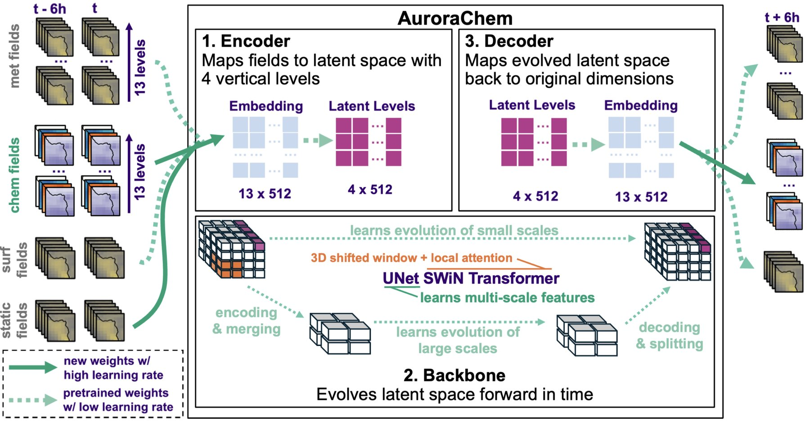
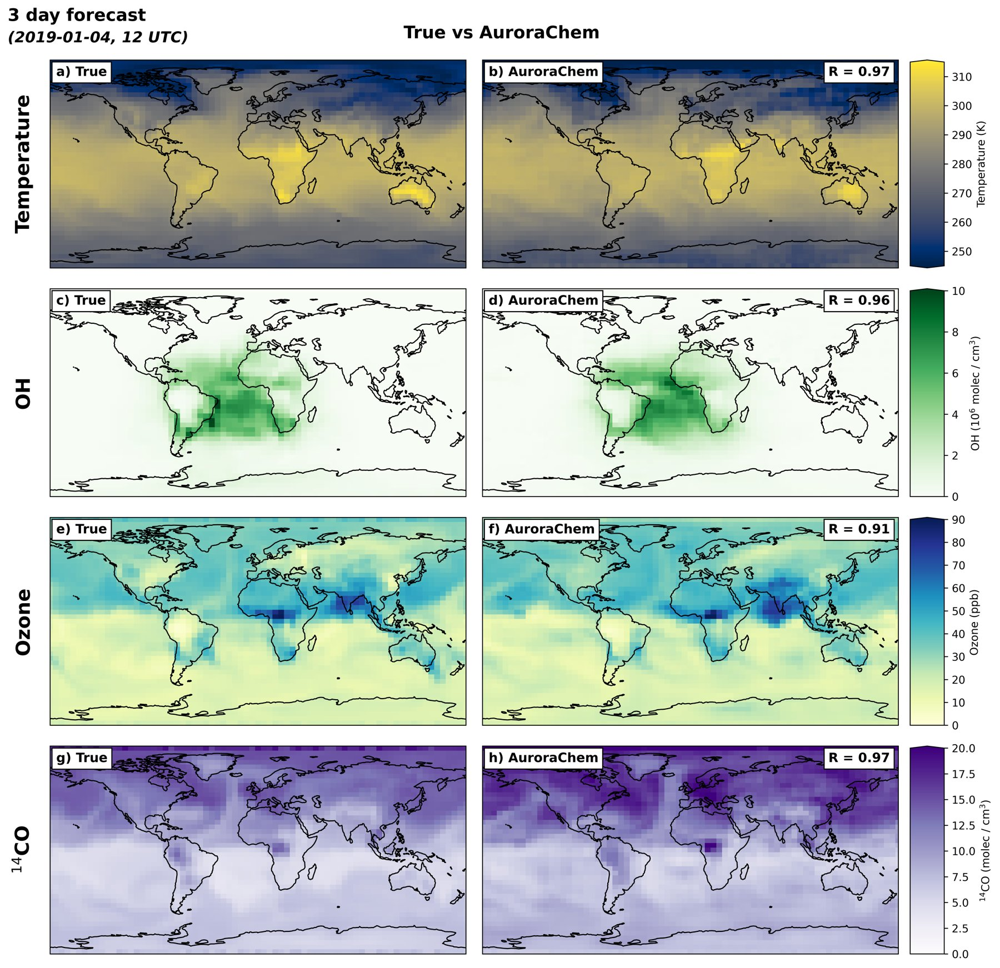
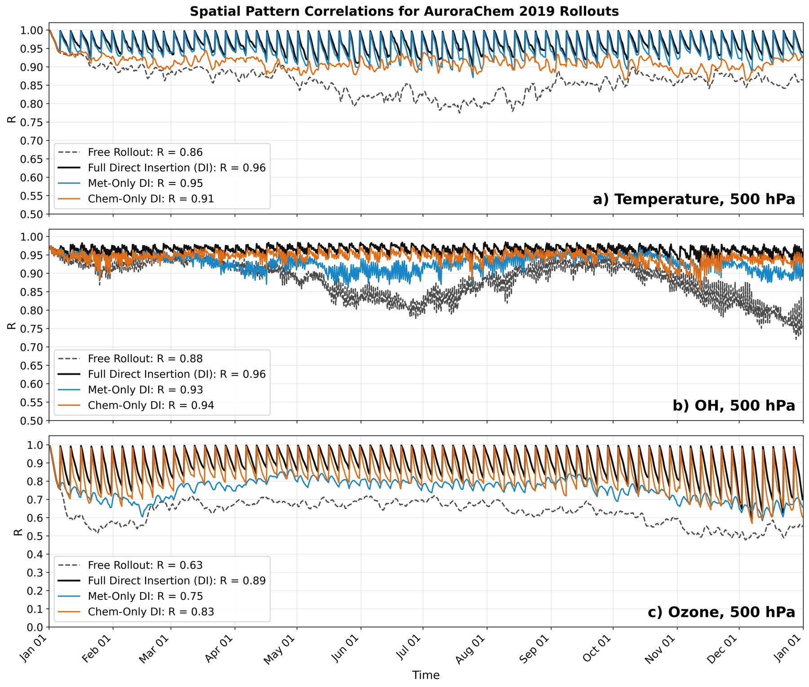

Overview
AuroraChem is a fine-tuned version of the Aurora atmospheric foundation model (Bodnar et al., 2025). Aurora is a 1.3 billion-parameter model pretrained on more than 1 PB of reanalysis, analysis, forecast, and climate model output. AuroraChem adds seven chemical species to the pretrained model and keeps its meteorological variables.
AuroraChem takes the atmospheric state at two times, t − 6 h and t, and predicts the state at t + 6 h. Longer simulations, or rollouts, feed each prediction back in as the next input.
Variables and grid
All fields are on a 4°×5° global grid. Three-dimensional fields are on 13 pressure levels: 1000, 925, 850, 700, 600, 500, 400, 300, 250, 200, 150, 100, and 50 hPa.
| Category | Fields | Levels | Role |
|---|---|---|---|
| Chemical | OH, Cl, NO, NO2, O3, CO, 14CO | Pressure | Predicted |
| Meteorological | Temperature, specific humidity, zonal and meridional wind, geopotential height | Pressure | Predicted |
| Surface meteorology | 2 m temperature, 10 m zonal and meridional wind, mean sea level pressure | Surface | Predicted |
| Emissions | Monthly anthropogenic CO, NOx, NH3, SO2 | Surface | Input |
| Static | Land-sea mask, soil type, topography, time of day, day of week, day of year | Surface | Input |
Training data
The chemical fields come from a GEOS-Chem v14.5.3 simulation performed for the FETCH4 project, which adds 14CO to the chemical mechanism. The meteorological fields come from ERA5. Emissions come from the CAMS global anthropogenic inventory. All fields are regridded to the AuroraChem grid. The model is trained on 2018 and evaluated on 2019.
Architecture

AuroraChem keeps the encoder, Swin Transformer U-Net backbone, and decoder of the base Aurora model, with three changes. The patch size is 1×1 instead of 4×4, which is affordable at 4°×5°. Each pressure level has its own patch embedding, because chemical species vary more with altitude than meteorological fields do. The chemical fields have their own decoder, and the meteorological fields use the pretrained decoder.
Training
All weights are updated during fine-tuning. The new encoder and decoder layers are trained from scratch at a learning rate of 0.01. The pretrained weights, which make up 98% of the model, are updated at a learning rate of 0.001. The loss is a latitude-weighted mean absolute error, with each chemical field weighted so that all fields contribute about equally.
Evaluation
AuroraChem is evaluated against GEOS-Chem for chemistry and ERA5 for meteorology using the spatial correlation Rs at each pressure level. After 3 days, Rs at 500 hPa is [0.91–0.97] for temperature, OH, O3, and 14CO. After six months, it is 0.85 for OH, 0.60 for O3, and 0.52 for 14CO.

Replacing fields with the true values every 5 days keeps the rollout close to the truth, including fields that are never replaced. Replacing only the meteorological fields keeps 500 hPa OH at an annual mean Rs of 0.93, compared with 0.88 without replacement.

Known limitations
- Free rollouts have a weak seasonal cycle. A rollout started in January stays close to Northern Hemisphere winter.
- O3, CO, and 14CO drift after a few months of free running, with artifacts in the tropics.
- The model receives no biomass burning or biogenic emissions.
- The same emissions were used in the training and test years, so the response to emission changes is untested.